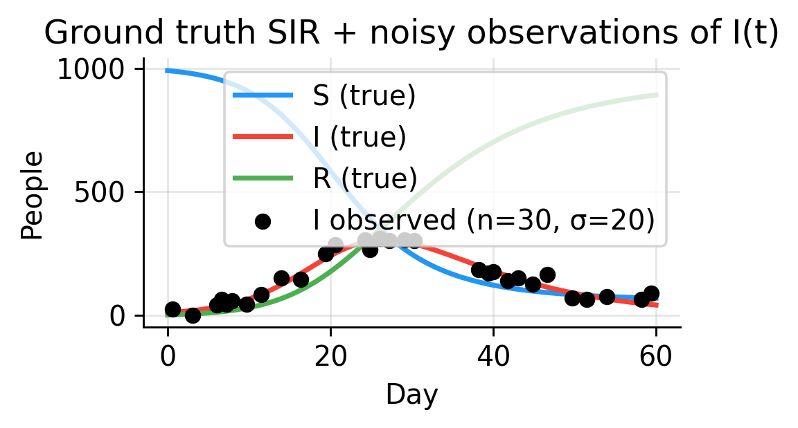

Physics-Informed Neural Networks for Epidemic Modeling
Fitting SIR dynamics and recovering transmission parameters with a physics-constrained network
PINN
SIR
epidemiology
Python
deep learning
Author
Jong-Hoon Kim
Published
April 9, 2026
1 From neural ODEs to PINNs: a brief history
The idea of using neural networks to solve differential equations predates deep learning. Lagaris et al. (1) showed in 1998 that a simple feedforward network, trained to minimise the residual of an ODE or PDE, can approximate solutions across a spatial or temporal domain. The key insight: automatic differentiation makes the ODE residual a differentiable loss term, enabling gradient-based training with no numerical solver.
Raissi et al. (2) formalised this as Physics-Informed Neural Networks: embedding known governing equations — ODEs, PDEs, integral equations, or any physical constraint — directly into the loss function. Their framework covered:
Forward problems — given parameters and initial conditions, solve for the solution trajectory; the PINN provides a mesh-free, differentiable approximation.
Inverse problems — given noisy observations, infer unknown parameters; \(\beta\) and \(\gamma\) are treated as additional learnable parameters alongside the network weights.
The paper demonstrated PINNs on canonical fluid-dynamics problems (Navier–Stokes, Burgers equation).
2 PINNs in epidemiology and infectious diseases
Linka et al. (3) embedded a SEIR model inside a PINN to estimate time-varying transmission rates from COVID-19 case counts across European countries. The physics constraint stabilised parameter recovery even when surveillance data were noisy and incomplete.
Kharazmi et al. (4) showed that PINNs can reliably identify structural and parametric features of epidemic models from sparse time-series, including cases where multiple parameters are inferred simultaneously.
A recurring theme is that the physics residual acts as a regulariser: penalising ODE violations prevents the network from overfitting noisy observations, so inferred parameters reflect the underlying epidemic dynamics rather than noise.
More recent work has extended PINNs to:
Multi-wave dynamics — multi-phase PINNs that switch physics regimes across intervention periods, capturing policy-driven changes in \(\beta\)(5).
Fractional-order models — incorporating memory effects through fractional derivatives to better match empirical epidemic decay curves (4).
Uncertainty quantification — Bayesian PINN extensions that propagate uncertainty in parameters through to forecast intervals (6).
Below, I use the SIR model to demonstrate how PINNs work in practice.
R₀ = 3.0
Peak infections: 304 on day 26.7
Final susceptibles: 68

Only the black dots are available for training. The full \(S\), \(I\), \(R\) trajectories are hidden from the model.
5 Physics-Informed Neural Network
5.1 Architecture
A PINN maps scaled time \(t_s \in [0,1]\) directly to the three compartment proportions \((S/N, I/N, R/N)\):
\[
(S(t),\, I(t),\, R(t)) / N \;=\; \text{NN}_\theta(t/T_{\max})
\]
Two scalars — \(\log\beta_s\) and \(\log\gamma_s\) — are learnable parameters alongside the network weights. Physical rates are recovered as \(\beta = \beta_s / T_{\max}\), \(\gamma = \gamma_s / T_{\max}\).
\[
\mathcal{L} = \underbrace{\mathcal{L}_\text{data}}_{\text{fit I observations}}
+ \lambda_\phi \underbrace{\mathcal{L}_\text{physics}}_{\text{SIR residuals via autograd}}
+ \lambda_0 \underbrace{\mathcal{L}_\text{IC}}_{\text{initial conditions}}
\]
The data loss\(\mathcal{L}_\text{data}\) is the MSE between predicted \(I(t)\) and the 30 noisy observations — the only signal available.
The physics loss\(\mathcal{L}_\text{physics}\) evaluates the SIR residuals at 200 collocation points via automatic differentiation. In scaled time \(t_s = t/T_{\max}\), the ODEs become:
\[
\frac{dS}{dt_s} = -\beta_s S I, \qquad
\frac{dI}{dt_s} = \beta_s S I - \gamma_s I, \qquad
\frac{dR}{dt_s} = \gamma_s I
\]
The initial-condition loss\(\mathcal{L}_\text{IC}\) anchors the network to the known state at \(t = 0\), preventing drift to arbitrary solutions.
Code
def data_loss(model, t_obs_s, I_obs_s):"""MSE on the I compartment at observed time points.""" sir = model(t_obs_s)return ((sir[:, 1] - I_obs_s) **2).mean()def physics_loss(model, t_col_base):""" SIR residuals at collocation points via automatic differentiation. Operates entirely in scaled time — no solver required. """ t = t_col_base.clone().requires_grad_(True) sir = model(t) S, I, R = sir[:, 0], sir[:, 1], sir[:, 2] ones = torch.ones(len(t)) dS = torch.autograd.grad(S, t, grad_outputs=ones, create_graph=True)[0] dI = torch.autograd.grad(I, t, grad_outputs=ones, create_graph=True)[0] dR = torch.autograd.grad(R, t, grad_outputs=ones, create_graph=True)[0] b, g = model.beta_s, model.gamma_s res_S = dS + b * S * I res_I = dI - b * S * I + g * I res_R = dR - g * Ireturn (res_S**2+ res_I**2+ res_R**2).mean()def ic_loss(model, y0_s):"""Match (S0, I0, R0)/N at t = 0.""" sir0 = model(torch.tensor([0.0]))[0]return ((sir0 - y0_s) **2).mean()
Note
Why collocation points?
The physics loss is evaluated on a dense grid of 200 collocation points spanning \([0, T_{\max}]\), separate from the 30 observation times. This ensures the SIR residual is penalised everywhere — not just where data exist — allowing physics knowledge to constrain the solution between and beyond observations.
The PINN fits the observed \(I(t)\) points and simultaneously reconstructs the latent \(S(t)\) and \(R(t)\) trajectories. The physics loss ensures the SIR equations are satisfied everywhere, not just at the observation times.
6.2 Effect of the physics loss weight
The weight \(\lambda_\phi\) balances data fidelity against physics enforcement. Below we vary it over several orders of magnitude and examine the effect on the fit and parameter estimates.
At \(\lambda_\phi = 0\) the network is a pure data-fitter and parameter recovery collapses. Increasing \(\lambda_\phi\) pulls estimates toward the true values; too large a weight sacrifices data fit. Here, \(\lambda_\phi \approx 0.1\) gives a reasonable balance.
Reconstructs\(S(t)\), \(R(t)\) without observing them
✓
Recovers\(\beta\), \(\gamma\) jointly
✓
Enforces\(S+I+R \approx N\)
✓ (via IC + physics loss)
Extrapolates beyond training window
Better than unconstrained networks
Requires an ODE solver during training
✗ (only autograd needed)
Black-box right-hand side
✗ (mechanistic residuals are explicit)
8 Extensions worth exploring
Uncertainty quantification
Bayesian PINN: place priors on \(\beta\) and \(\gamma\) and use MCMC (e.g. NUTS in NumPyro) or variational inference to obtain posterior credible intervals.
Ensemble PINNs: train multiple networks from different random initialisations and use the spread as a proxy for epistemic uncertainty.
Identifiability and multi-wave dynamics
Not all parameters are jointly identifiable from \(I(t)\) alone. Kharazmi et al. (4) provide a PINN-based identifiability analysis framework applicable to SIR extensions.
Multi-phase PINNs split the time axis at known intervention dates and fit separate physics terms per phase, making them well-suited to multi-wave outbreaks.
9 References
1.
Lagaris IE, Likas A, Fotiadis DI. Artificial neural networks for solving ordinary and partial differential equations. IEEE Transactions on Neural Networks. 1998;9(5):987–1000. doi:10.1109/72.712178
2.
Raissi M, Perdikaris P, Karniadakis GE. Physics-informed neural networks: A deep learning framework for solving forward and inverse problems involving nonlinear partial differential equations. Journal of Computational Physics. 2019;378:686–707. doi:10.1016/j.jcp.2018.10.045
3.
Linka K, Peirlinck M, Sahli Costabal F, Kuhl E. Outbreak dynamics of COVID-19 in Europe and the effect of travel restrictions. Computer Methods in Biomechanics and Biomedical Engineering. 2020;23(11):710–7. doi:10.1080/10255842.2020.1759560
4.
Kharazmi E, Cai M, Zheng X, Zhang Z, Lin G, Karniadakis GE. Identifiability and predictability of integer- and fractional-order epidemiological models using physics-informed neural networks. Nature Computational Science. 2021;1(11):744–53. doi:10.1038/s43588-021-00158-0
5.
He M, Tang B, Xiao Y, Tang S. Transmission dynamics informed neural network with application to COVID-19 infections. Computers in Biology and Medicine. 2023;165:107431. doi:10.1016/j.compbiomed.2023.107431
6.
Linka K, Schäfer A, Meng X, Zou Z, Karniadakis GE, Kuhl E. Bayesian physics informed neural networks for real-world nonlinear dynamical systems. Computer Methods in Applied Mechanics and Engineering. 2022;402:115346. doi:10.1016/j.cma.2022.115346